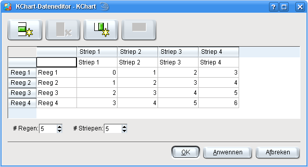

De Data Editor lett sik mit -> ut dat Menü opropen, oder mit en Klick op dat Lüttbild binnen den Warktüüchbalken.

Mit den Data Editor laat sik all Weerten fastleggen, un ok de Tall vun Regen un Striepen instellen.
De Bedüden vun Regen un Striepen hangt vun den Diagramtyp af. Allmeen warrt elk Reeg as een Datenreeg oder Datensett behannelt, un elk Striep stellt de Weerten vun all Datensetten op en angeven Steed dor.
En Datensettnaam lett sik dör Anklicken vun de Regenöverschrift (links vun den eersten Striep mit Weerten) ännern. En Striepnaam dör Klicken op de Striepöverschrift (böver de eerste Reeg).
De Tall vun Regen un Striepen lett sik na Möög topassen. Vun Verschoon 1.4 af gifft dat de Bövergrenz vun 16 Regen un 16 Striepen nich mehr.


Wullt Du wat to disse Siet seggen oder ehr verbetern?
Denn stüer Dien Vörslääg to den KDE-Dokmentatschoonkoppel!